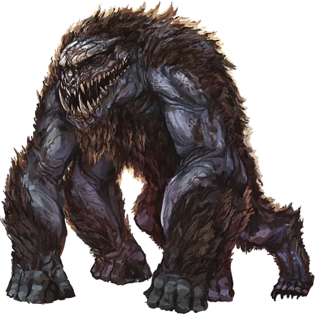

Удаак
Udaak
Громадное Исчадие, законно-злое

Класс Доспеха 18 (природный доспех)
Хиты 165 (10к20 + 60)
Скорость 50 футов
| мод | спас | ||
|---|---|---|---|
| СИЛ | 26 | +8 | +13 |
| ЛОВ | 14 | +2 | +2 |
| ТЕЛ | 22 | +6 | +11 |
| мод | спас | ||
|---|---|---|---|
| ИНТ | 3 | −4 | −4 |
| МДР | 11 | +0 | +0 |
| ХАР | 10 | +0 | +0 |
Уязвимость к урону звук
Иммунитет к урону яд; дробящий, колющий, рубящий от немагических атак
Иммунитет к состояниям захват, испуг, опутанность, отравление
Чувства тёмное зрение 120 футов, пассивное Восприятие 10
Опасность 16 (15000 опыта)
Бонус мастерства +5
Особенности
Атака в броске. Если удаак переместится как минимум на 20 футов по прямой к цели, а затем в том же ходу попадет по ней атакой ударом, цель дополнительно получает от этой атаки 27 (6к8) дробящего урона. Если цель существо, она должна преуспеть в спасброске Силы Сл 21, иначе будет отброшена от удаака на расстояние до 20 футов и упадёт ничком.
Осадный монстр. Удаак наносит двойной урон объектам и сооружениям.
Действия
Мультиатака. Удаак совершает три атаки: одну Укусом и две Ударом.
Укус. . Рукопашная атака оружием: +13 к попаданию, досягаемость 5 футов, одно существо. Попадание: 21 (2к12 + 8) колющего урона, и цель становится схваченной (Сл высвобождения 21). Пока захват не закончится, цель считается опутанной, и удаак не может укусить другую цель.
Удар. . Рукопашная атака оружием: +13 к попаданию, досягаемость 10 футов, одна цель. Попадание: 21 (3к8 + 8) дробящего урона.
Проглатывание. Удаак совершает одну атаку укусом против существа Большого размера или меньше, которое он схватил. Если атака попадает, цель получает урон от укуса и проглатывается, и захват заканчивается. Проглоченное существо ослеплено и опутано, имеет полное укрытие от атак и других эффектов снаружи удаака, и получает 21 (6к6) урона кислотой в начале каждого хода удаака.
Если удаак получит 30 или больше урона в один ход от существа внутри себя, то он должен успешно совершить спасбросок Телосложения Сл 21 в конце этого хода или изрыгнуть всех проглоченных существ, каждое из которых падает сбитым с ног в 10 футах от удаака. Если удаак умирает, то проглоченное существо больше не является опутанным и может выбраться из тела, использовав 20 футов движения и упав сбитым с ног при выходе.
Описание
Известные обычно как звери Жорхаса, эти огромные существа напоминают огромную демоническую помесь быка и гориллы. Удааки - одинокие странники, чаще всего встречающиеся на окраинах населенных земель в пустошах Восточного Винандира. Хотя они часто ищут пищу в мусоре, голодный удаак нападет практически на любую добычу, его четыре пары красных глаз и множество зубов и клыков вселяют страх в сердце любого существа.
Живая Осадная машина. Первоначально привезенные в Экзандрию из Бездны, удааки потеряли свою связь с этим планом после Отголосков Дивергенции и с тех пор свободно бродят по миру. В последние годы мастера войны династии Крин разработали тайные ошейники, которые могут держать удаака под контролем, и они начали использовать этих ужасных существ в войне против Двендалийской империи.